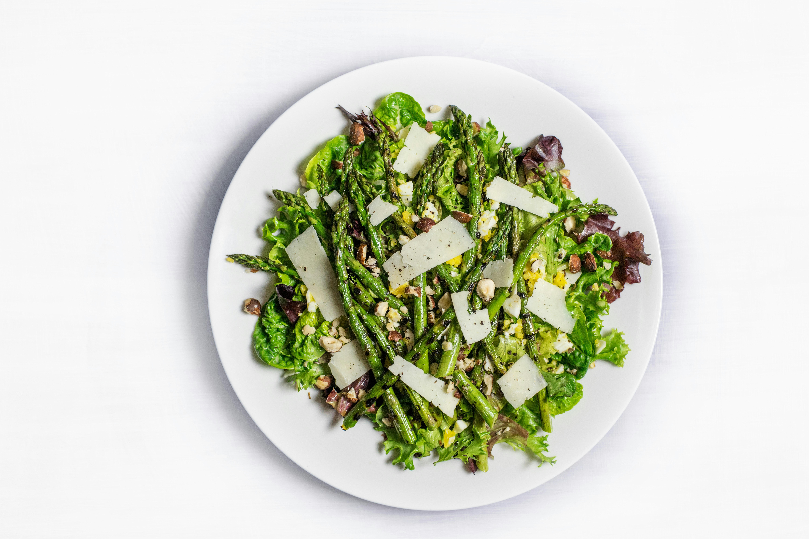

<section class="profile">
    <div class="aside__container">
        <aside class="profile__aside">
            <nav class="profile__aside--nav">
                <ul class="profile__aside--nav-list">
                    <li class="profile__aside--nav-list-item" routerLinkActive="selected"><a
                            class="profile__aside--nav-list-item-link" routerLink="search">Search</a></li>
                    <li class="profile__aside--nav-list-item" routerLinkActive="selected"><a
                            class="profile__aside--nav-list-item-link" routerLink="news">News</a></li>
                    <li class="profile__aside--nav-list-item" routerLinkActive="selected"><a
                            class="profile__aside--nav-list-item-link" routerLink="recipes"
                            [queryParams]="{ offset, limit }">My Recipes</a></li>
                    <li class="profile__aside--nav-list-item" routerLinkActive="selected"><a
                            class="profile__aside--nav-list-item-link" routerLink="#">Liked
                            Recipes</a></li>
                    <li class="profile__aside--nav-list-item" routerLinkActive="selected"><a
                            class="profile__aside--nav-list-item-link" routerLink="#">Saved
                            Recipes</a></li>
                </ul>
            </nav>
            <div class="profile__aside--bubles">
                
            </div>
        </aside>
    </div>
    <article class="profile__content" [ngClass]="{'bg': isRecipesRoute}">
        <router-outlet></router-outlet>
    </article>
</section>